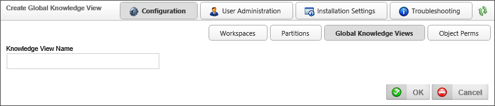
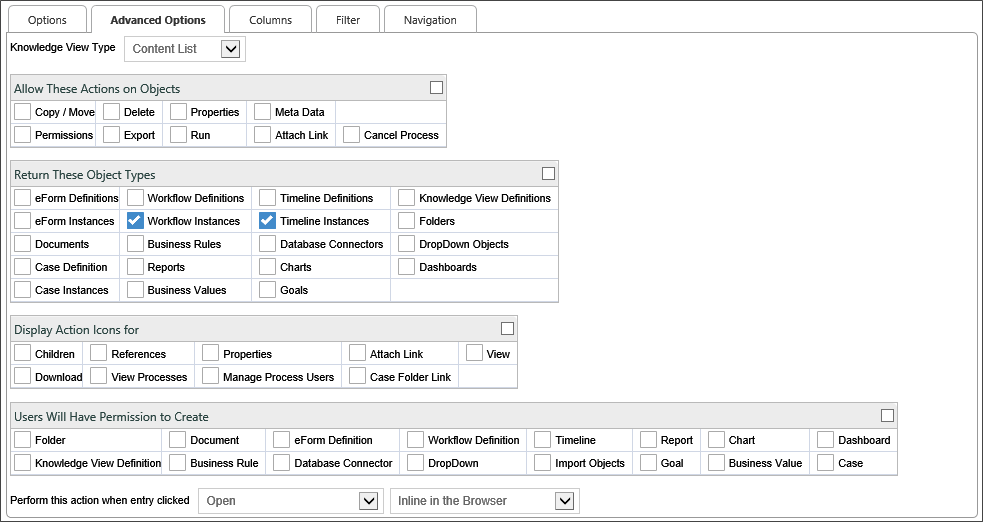
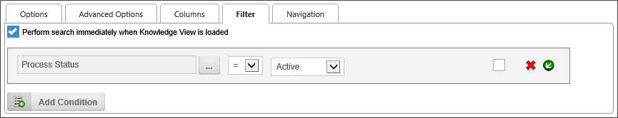
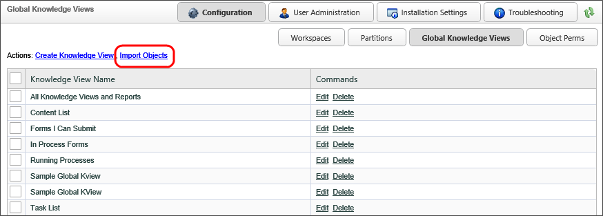

|
|
Lesson Contents | In this Lesson, you will learn how to configure a Global Knowledge View. |
A global knowledge view is a knowledge view that is available across all partitions. By default, the Content List knowledge view is created. All lists are now created as knowledge views. These global knowledge views have functions and options similar to specific knowledge views in a partition. A global knowledge view has some restrictions on the data in columns and filters. Data that is specific to a partition cannot be used (e.g. Form fields, categories).
 When importing XML files from another system, always import the Partition xml file first, then Global Knowledge Views, and last the Profiles.
When importing XML files from another system, always import the Partition xml file first, then Global Knowledge Views, and last the Profiles.
Global knowledge views can be accessed by clicking the Global Knowledge Views button in the Configuration section of the IT Admin area.

One common use of Global Knowledge Views is to create custom task lists and custom content lists. They can also be used to provide metrics for system usage.
If you need general information on how Knowledge Views are configured, or descriptions of specific Knowledge View properties, please refer to the student guide for Core Training course, or the Implementer's Reference Guide documentation. As this course assumes that you have already taken the Core Training course, and are generally familiar with how to create Knowledge Views, we will proceed directly to configuring a sample Global Knowledge View.
For the purposes of this lesson, we will create a Global Knowledge View that lists all of the currently running processes on the Process Director server. This might be the sort of Knowledge View an administrator might want to create in order to see how many processes are running at a given time.
To create a new Global Knowledge View, click the Create Knowledge View Actions Link to open the Create Global Knowledge View screen.

Enter "Sample Global KView" as the Knowledge View Name property, then click the OK button to open the configuration screen for the Knowledge View.
In the configuration screen, change the default Knowledge View icon to an appropriate icon.
On the Advanced Options tab, enable the following configuration settings, as illustrated below.

Clear all the check boxes in this section.
Ensure that only Workflow Instances and Timeline Instances are checked.
Ensure that only View is checked.
Clear all the check boxes in this section.
We need to change the default columns for this Knowledge View to show the appropriate data.
For the first Knowledge View column, change the Column Name from "Name" to "Process Name". Click on the Build button for the picker in the Column Data field to open the Choose System Variable dialog box, and select the Process Instance Name variable from the chooser. Click the OK button to save your selection and close the Choose System Variable dialog box.
Using this same procedure for editing the columns, set the remaining columns with the following settings.
| COLUMN NAME | COLUMN DATA |
|---|---|
| Run Time | Process Run Time |
| Users | All Process Users |
| Started On | Process Start Date |
Delete the remaining column by clicking on the Remove icon, which looks like a red "X".
In the Filter tab, click the Add Condition button to open the Condition Builder dialog box. Set the first condition to use the Process Status system variable, set the operator to "=", and set the comparison value to "Active". When you are done, the filter setting should appear like the one below.

This filter configuration will ensure that the Global Knowledge View will only show active processes when it is run.
Once you have configured the Global Knowledge View, click the OK button to close and save the Knowledge View. Running the Global Knowledge View should now show all of the running processes on the Process Director server.
Global Knowledge Views can be imported from other systems via the XML export/import functionality built into Process Director. On the Global Knowledge Views configuration page, you can import an XML file from another Process Director installation by clicking the Import Objects link on the configuration page.

Clicking the Import Objects link will open the Import Objects screen. You can click the Browse button to find the XML file to import, then click the OK button to begin importing the XML file.
When importing XML files from another system, always import the Partition xml file first, then Global Knowledge Views, and then the Profiles, in that order.